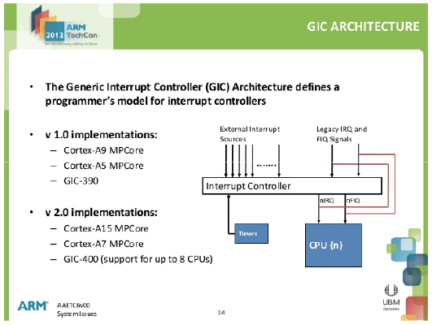

Week 12
Interrupt in ARM

Generic Interrupt Controller (GIC)
- Programmer’s model \(\approx\) set of registers
- nIRQ: Additional pins for interrupt signals
Interrupt mechanisms
on the ARM architecture, there are three physical types of interrupts:
- SWI: software interrupts (i.e. exceptions)
- IRQ: regular hardware interrupts
- FIQ: fast hardware interrupts
Linux has three interrupt semantics:
- software interrupts routed via SWI table
- Hardware interrupts routed via the Interrupt Descriptor Table (IDT)
- inter-processor interrupts
Software vs. hardware interrupts
Software interrupts we saw before
- User mode initiates system calls with the SWI instruction (or on x86, the INT instruction)
- Illegal instructions are trapped
- occurs synchronously with processor instructions
- also called ‘exceptions’ or ‘traps’
Hardware interrupts are from devices:
- indicated by an electrical signal to a processor
- on ARM, multiplexed by the generic interrupt controller (GIC)
- asynchronous with instruction stream
Inter-processor interrupts (IPIs)
Modern multi-core machines need a way for cores to communicate
- Start/stop/sleep/wakeup other cores
- request task migration
- request remote function call (synchronization)
Implemented differently from traditional interrupts, see smp_cross_call() in arch/arm/kernel/smp.c
System architecture

Inter-processor interrupt used to send interrupts between CPUs; e.g., for:
- task migration
- flushing of low-level caches
Hardware interrupt interface
Register new handlers with request_irq(), using three key attributes:
- IRQ number
- IRQ handler function
- whether the IRQ is shared
Handler functions execute in interrupt context:
- No process context
- No
current, nomm_struct, etc.
- No
- Disabled own interrupt line (optionally all interrupts)
- may be interrupted by other interrupts
- does not need to be re-entrant
- cannot sleep
What happens during?
When an interrupt occurs
- the current instruction completes execution
- The PC value is pushed onto the stack
- The SR value is pushed onto the stack
- The PC is loaded with the contents of the word stored at what is call an interrupt vector
- Execution continues in what is termed an interrupt service routine, ISR.


Hardware interrupt tension
Handler must be fast
- Disables own interrupt line (bad for shared lines), and may disable all lines
- can preempt more important work
But also may have to do a lot of work
- must perform potentially large amounts of work to service hardware
- cannot sleep/block, so cannot call functions that can sleep/block (such as
kmalloc())
Strategy: service hardware immediately but defer as much work as possible till later
Process vs. interrupt

| process context | interrupt context |
|---|---|
| kernel is executing on behalf of a process | kernel is executing with no associated process context (user-level process or kernel thread) |
| current points to the currently executing process | there is no thread context on the CPU; current points to the last interrupted process |
| can sleep (as long as it doesn’t hold a lock) | cannot sleep - how would the kernel re-schedule it without a process context? |
| locks can be taken without disabling interrupts | all interrupts must be disabled (on this core) before locks can be taken |
Top half / bottom half processing
modern interrupt handlers are split into top half (fast) and bottom half (slow) components
Top half:
- does minimum work to service hardware
- sets up future execution of bottom half
- clears interrupt line
Bottom half:
- performs deferred processing
Example: network card - top half clears card buffer while bottom half processes and routes packets